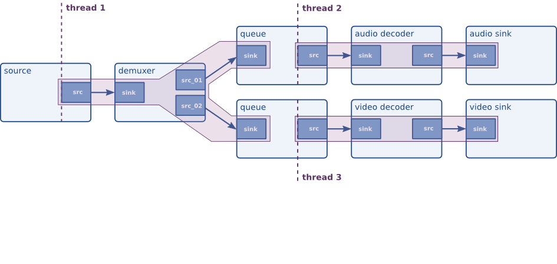

SAM9M10 Gstreamer
Introduction
This page is a starting point to understand video capabilities of the AT91SAM9M10, and the basics of GStreamer. It contains the software plugin needed, plus some explanations about the ATMEL plugin. It also provides some links to the GStreamer community.Overview of GStreamer
- GStreamer is an open source library for building multimedia applications which for instance can handle audio, video or even both.
- For example GStreamer could be used to create your own media player. Indeed GStreamer already includes components such as demuxer, codecs, filters, scalers...
Its main advantage is its modularity. You just need to plug different elements all together so that it's possible to write a complete video or audio editing application.
- The framework is based on plugins. It already contains various codec and other functionality (scaling, color convertion...). The different plugins could be linked and arranged in a pipeline which will define the flow of the data.
- Finally GStreamer provides a framework to write your own plugins and a complete API to write your own application using any plugins.
- For more information please go and check the GStreamer web site: http://gstreamer.freedesktop.org/

- GStreamer is an open source project with ongoing development. See mailing-list http://gstreamer.freedesktop.org/lists/
Atmel GStreamer plugin
Atmel AT91SAM9M10 plugin sources
| AT91SAM9M10 plugin sources | Version |
|---|---|
| gst-plugin-x170-1.0.tar.gz |
1.0 |
Overview
- We do not need to significantly modify GStreamer to support the AT91SAM9M10 decoder, we just need to write a plugin for it.
Doing:
gst-inspect x170 will give you all the capabilities supported by the plugin.
For instance you will have:
Pad Templates:
SINK template: 'sink'
Availability: Always
Capabilities:
image/jpeg
video/x-h264
width: [ 16, 4096 ]
height: [ 16, 4096 ]
framerate: [ 0/1, 2147483647/1 ]
Here you can see that the video decoder can decode H264( Baseline Profile, levels 1-3.1) videos.
This list is of course not exhaustive.
You can also check the elements properties of the decoder:
Element Properties:
name : The name of the object
flags: readable, writable
String. Default: null Current: "x1700"
codec : Set codec type
flags: readable, writable
Enum "X170CodecName" Default: 0, "obtained from GStreamer" Current: 0, "obtained from GStreamer"
(0): obtained from GStreamer - AUTO
(1): JPEG raw bit stream - JPEG
(2): H264 raw bit stream - H264
(3): MPEG2 raw bit stream - MPEG2
(4): MPEG4 raw bit stream - MPEG4
(5): VC1 raw bit stream - VC1
Here you can check the name of the video decoder, plus the different codecs it supports.
More properties analysis:
rotation : Rotate output
flags: readable, writable
Enum "X170RotationType" Default: 0, "0 degrees clockwise" Current: 0, "0 degrees clockwise"
(0): 0 degrees clockwise - 0
(1): 90 degrees clockwise - 90
(2): 180 degrees clockwise - 180
(3): 270 degrees clockwise - 270
output-width : Width output
flags: readable, writable
Unsigned Integer. Range: 16 - 1280 Default: 0 Current: 480
output-height : Height output
flags: readable, writable
Unsigned Integer. Range: 16 - 720 Default: 0 Current: 272
crop-x : Crop output (x coordinate)
flags: readable, writable
Unsigned Integer. Range: 0 - 4294967295 Default: 0 Current: 0
crop-y : Crop output (y coordinate)
flags: readable, writable
Unsigned Integer. Range: 0 - 4294967295 Default: 0 Current: 0
crop-width : Crop output (width)
flags: readable, writable
Unsigned Integer. Range: 0 - 4294967295 Default: 0 Current: 0
crop-height : Crop output (height)
flags: readable, writable
Unsigned Integer. Range: 0 - 4294967295 Default: 0 Current: 0
Here are some post processing features supported by the video decoder such as scaling(up-scaling and down-scaling), image rotation or cropping.
"output_width" and "output_height" value should be set to the size of your screen, so the decoder will resize your video(up or down-scale) according to your specific Hardware and you will have a full screen image.
output : Output video format
flags: readable, writable
Enum "X170OutputType" Default: 0, "UYVY video format" Current: 2, "RGB16 (565) video format"
(0): UYVY video format - UYVY
(1): RGB15 (555) video format - RGB15
(2): RGB16 (565) video format - RGB16
(3): RGB32 video format - RGB32
Here you can see the different formats the decoder can output. It should be set according to the capabilities of the next stage of the pipeline(video sink).
For instance if you need to play the video on the screen of your AT91SAM9M10-EKES board, you will set it to RGB16.
Video decoder specifications
Here are the different formats supported by the AT91SAM9M10 video decoder: Decoder supported standards:- MPEG-4 Simple and Advanced Profile, levels 0-5
- H.264 Baseline Profile, levels 1-3.1
- H.263 Profile 0, levels 10-70
- VC-1
- Simple Profile, Low and Medium Levels
- Main Profile, Low, Medium and High Levels
- Advanced Profile, Levels 0-3
- MPEG-2 Main Profile, Low, Medium and High Levels
- JPEG Profile Baseline DCT (sequential) and JFIF 1.02 file form
Basic command lines examples:
For executing these commands from the console, you will have to specify the X display. You can type in your terminal:export DISPLAY=:0.0
AVI(video only)
export DISPLAY=:0.0 gst-launch filesrc location="path_to_file/your_file.avi" ! avidemux ! x170 output=RGB16 ! ximagesink
Pipeline example to play both video and audio:
(image from Gstreamer documentation: "GStreamer Application Development Manual (0.10.25.1)" by Wim Taymans, Steve Baker, Andy Wingo, Ronald S. Bultje and Stefan Kost. This material may be distributed only subject to the terms and conditions set forth in the Open Publication License, v1.0 or later (the latest version is presently available at http://www.opencontent.org/opl.shtml
AVI(video and audio)
A command line example to play avi files:
export DISPLAY=:0.0
gst-launch filesrc location="path_to_file/your_file.avi" ! avidemux name=demux \
{ demux.video_00 ! queue ! x170 output=RGB16 inbuf-thresh=10000 ! queue ! ximagesink } \
{ demux.audio_00 ! queue ! mad ! audioconvert ! queue ! osssink }
MPEG(video and audio)
A command line example to play mpeg files:
export DISPLAY=:0.0
gst-launch filesrc location="path_to_file/your_file.avi" ! mpegdemux name=demux \
{ demux.video_00 ! queue ! x170 output=RGB16 inbuf-thresh=50000 ! ximagesink } \
{ demux.audio_00 ! queue ! mad ! osssink }
ANY KIND
Here is a script which allows you to play any kind of video supported by the decoder:- gst-at91sam9m10-play.sh:
DISPLAY=:0.0
if [ -f $1 ]; then
echo Video file : $1
else
echo File $1 does not exist
exit 1
fi
# Get container type
CONTAINER=`gst-typefind $1 | awk -F " - " '{print $NF}'`
#For mpeg
TEMP=`echo $CONTAINER | grep "video/mpeg,"`
if [ "$TEMP" != "" ]; then
CONTAINER=video/x-mpeg
fi
case "$CONTAINER" in
video/x-ms-asf)
DEMUX=asfdemux
;;
video/x-msvideo)
DEMUX=avidemux
;;
video/x-mpeg)
DEMUX=mpegdemux
;;
video/quicktime)
DEMUX=qtdemux
;;
*)
echo File type $CONTAINER is not supported
exit 1
esac
#Play video
CMD="gst-launch filesrc location=$1 ! $DEMUX name=demux \
demux.video_00 ! queue ! x170 output=RGB16 inbuf-thresh=50000 output_width=480 output_height=272 ! ximagesink display=$DISPLAY \
demux.audio_00 ! queue ! decodebin ! osssink "
echo gst-launch command line:
echo $CMD
RET=`exec $CMD`
gpe-question --question "$RET" --buttons icons1:"Ok
More informations
http://gstreamer.freedesktop.org/| WebFaqBaseForm | |
|---|---|
| Boards | AT91SAM9 boards |
| Components | |
| Summary | M10 Vdec support |


| I | Attachment | Action | Size | Date | Who | Comment |
|---|---|---|---|---|---|---|
| |
atmel-gstreamer-plugin.png | manage | 6.6 K | 2010-01-15 - 15:59 | NicolasFerre | |
| |
gstreamer_pipeline.png | manage | 37.8 K | 2010-01-15 - 16:00 | NicolasFerre |
r6 - 28 Aug 2015 - 03:01:26 - JoshWu

{kind=link}
{kind=link}
{kind=link}
{kind=link}
Copyright © by the contributing authors. All material on this collaboration platform is the property of the contributing authors.
Linux® is the registered trademark of Linus Torvalds in the U.S. and other countries.
Microchip® and others, are registered trademarks or trademarks of Microchip Technology Inc. and its subsidiaries. 
Arm® and others are registered trademarks or trademarks of Arm Limited (or its affiliates). Other terms and product names may be trademarks of others.
Ideas, requests, contributions ? Connect to LinksToCommunities page.